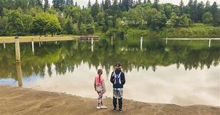

Welcome to Portland Oregon
Mt Hood

Come to Mt Hood one of the main attractions of Portland Oregon, Come sking, Snowboarding, participate, in events such as the summer event,the hot chocolate contest, so many great things to do at mt hood.
WEATHER
32 F °
Partly cloudy
Wind Speed: 15 mph
Wind Chill:

Portland loves the outdoors, and nature loves Portland back. Between the Gorge, Forest Park, the Willamette River, and the Cascades, there really may be 1000 hikes near Portland to choose from.
The Mall
Mall? More like super mall. Llyod center mall features three floors of shopping with the third level serving mostly as professional office spaces, a food court, and U.S. Education Corporation's Carrington College. it has over 178 stores with an ice rink in the middle, and the mall is 1,472,000 sq ft theres so much to do in Llyod Center Mall.
More Than A Supermarket
Fred Meyer is a hypermarket founded in 1931 in Portland, Oregon, USA, by Fred G. Meyer. The stores are found in the western U.S., within the states of Oregon, Washington, Idaho, and Alaska. a complete grocery supermarket with a drugstore, bank, clothing, jewelry, home decor, home improvement, garden, electronics, restaurant, shoes, sporting goods and toys. The western region of Kroger corporation is headquartered in Portland just like the ad says "whats on your list today? you'll find it at fred meyers".
Salmon Creek
come swim,fish,hike,and camp at salmon creek.
There are so many wonderful places to go in portland, OR. A real main attraction there is Washington parks rose garden so beautiful calm, perfect for a picnic, with all your family, friends and loved ones.